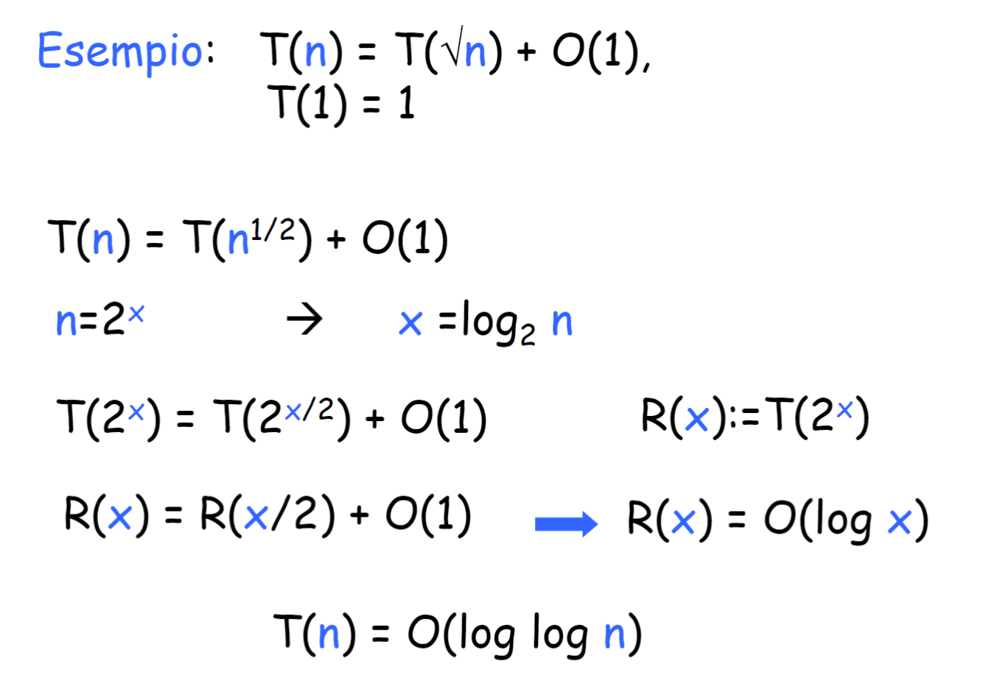
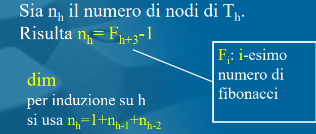
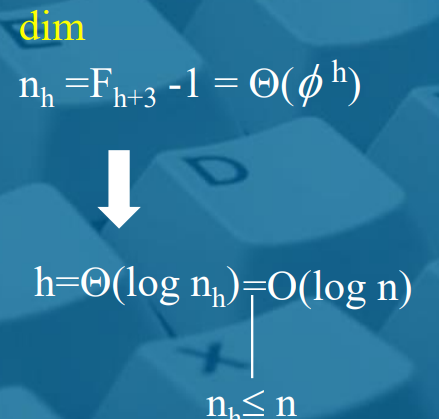

Fibonacci
- algoritmo 1
- usa la formula con la radice e il
- algoritmo 2
- array costoso
- ma anche spazio
- algoritmo 3
- variabili che dimenticano
- algoritmo 5
- matrici vedi il lemma della matrice con F n+1 Fn Fn e Fn-1
- algoritmo 6
- senza fare la potenza delle matrici ogni volta calcola la potenza della matrice k/2 e poi la moltiplica così è come se fa con k che è n-1 della
- Lemma 1
- numero di foglie di Fibonacci2=
- induzione radice foglie=1 p.b
- prende un albero n>2 e vede che il numero di foglie dei sottoalberi n-1 e n-2 è Fn-1 e Fn-2 che insieme infatti fanno Fn
- numero di foglie di Fibonacci2=
- Lemma 2
- il numero di nodi interni è uguale al numero di foglie-1
- p.b radice 1 foglia 0 nodi interni
- p.i creo un albero con tot nodi interni e tot foglie, per ipotesi induttiva ho detto che nfoglie-1 nodi interni
- creo T’ con 1 nodo interno in meno quindi con 2 foglie in meno e vedo che i-1=f-1-1 quindi i=f-1
- il numero di nodi interni è uguale al numero di foglie-1
Notazione asintotica
- esiste una costante maggiore di 0 per cui…
- lower bound
- upper bound
- theta
- o piccolo sottoinsieme O
- omega piccolo sottoinsieme omega grande
Ottimalità di un algoritmo
- un problema P si risolve in tempo se esiste un algoritmo che lo fa
- un problema P si risolve in tempo se ogni algoritmo lo risolve con un lower bound di
- un problema P con lower bound viene risolto da un algoritmo ottimo in tempo
Teorema del lower bound degli algoritmi basati su confronti
- un algoritmo basato su confronti impiega
- prendiamo l’albero delle decisioni esso avrà n! foglie perché sono tutte le istanze possibili
- quest’ultimo è alto
- la formula di stirling ci dice che
- sostituisco e ho due logaritmi, semplifico e avrò la soluzione voluta
- prendiamo l’albero delle decisioni esso avrà n! foglie perché sono tutte le istanze possibili
Albero binario altezza
- si fa per induzione si prende il nodo con almeno k/2 foglie e si vede che ha altezza quindi l’altezza totale è
Binary Search
- algoritmo ordinato costo
Equazioni di ricorrenza

Selection Sort
Ci scorriamo il nostro array e ad ogni elemento facciamo un controllo su qual è l’elemento più piccolo in quella determinata posizione
Insertion Sort
- prende ogni elemento e lo sposta indietro se necessario se minore
Bubble soft
- scambia eventuali < a coppie di 2 e fa n cicli finché non va bene
Merge Sort
- due algoritmi
- Merge
- prende inizio meta fine
- mette gli elementi in ordine e li copia nell’array
- Merge Sort
- fa due chiamate di merge sort ogni volta dividendo la metà
- poi fa merge
- costo 2T(n/2)+O(n)
- Albero chiamate
- Merge
Quick Sort
- effettua un tot di partition prendendo come perno l’inizio della partition
- ogni volta scambia i valori sup e inf del perno
- effettua più quick sort
- costo peggiore
- probabilità alta
Heap e Heap Sort
- padre(v) chiave(v) nodo eccetto v
- rafforzato quindi fino al penultimo livello completo
- poi tutto a sx
- alto cmq logn perchè fino all’ultimo stiamo la
- FixHeap
- confronta il nodo v con il figlio di v con chiave massima u se vince scambia, non lo fa per ogni nodo infatti se ho un min heap e voglio un max heap non basta solo un fixheap
- costo logn
- Heapify
- fa un fixheap dalla radice e poi per ogni altro sottoalbero sx e dx
- essendo un heap rafforzato costa n’ nodi ma sono praticamente n
- Heap sort
- faccio heapify prendo il massimo dalla radice quindi pos1 e poi faccio fixheap
- FixHeap
Code con priorità
d-heap
- si applica ai min heap principalmente
- muovi alto
- muovi basso
- insert
- inserisci alla fine e fai muovi alto
- cancellazione
- scambio con foglia e elimino poi prendo la foglia e faccio muovi basso
- decremento e incremento
- giocano entrambi con muovi alto muovi basso
- per fare il merge o metti tutto su una nuova coda con costo n
- oppure fai n inserimenti nel +grande dei due
Heap binomiali
- d-heap min con proprietà per cui Bi avrà come sottoalberi Bi-1 e Bi-2
- ristruttura
- serve per formare heap binomiali
- se ho due Bi uguali allora li fondo formando Bi+1 e mettendo come radice la chiave più piccola
- serve per formare heap binomiali
- poi ho i vari inserimenti, decrease key eliminazioni
- merge
- prende la foresta la mette insieme alle altre e poi fa ristruttura
Alberi alti almeno
- passo base ho un solo nodo alla radice quindi prof=0 infatti
- per il caso induttivo dimostro che un albero con k/2 foglie abbia profontità almeno per induzione quindi un albero con k foglie deve avere come profondità
- per dimostrarlo prendo un nodo interno alla radice con 1 figlio che è un sottoalbero con almeno k/2 foglie
- sommando poi la radice avrei 1+ che con calcoli semplici alla fine fa log2k
Integer Sort
- crea un array Y lungo quanto il valore max fornito
- inizializza a 0 ogni posizione
- incrementa a ogni elemento trovato la posizione
- ricostruisce finche la posizione è >0 scorre i k elementi
- O(n+k) quindi dipende dal max se max=n daje
Bucket Sort
- come integer sort solo che mette in un array di liste
- fa append quindi elementi con stessa chiave sono ordinati
- campi satellite
- bilanciato per append
- O(n+k)
Radix Sort
- utilizza i bucket per fare n passate per ogni cifra meno significativa
- dalle unità alle centinaia es…
- ad ogni passata mette in un bucket le stesse cifre in ordine
- per induzione ad ogni passata avremo il bucket 0 con le cifre più piccole già ordinate per append
- se k è un O di n^c allora basta fare il cambio di base da n a 2 per vedere quanto viene e viene cmq O(n)
Pila
- push e pop
Coda
- enqueue e dequeue
Alberi
- Visita DFS
- Profondità
- Usa la pila e per ogni nodo visita il figlio sx e dx e li mette nella pila finche pila non vuota
- Anche versione ricorsiva
- Visita BFS
- Ampiezza
- Usa la coda
- usando la coda visita prima figlio sx poi subito dopo figlio dx e non fa figlio sx, visita tutto e poi figlio dx
BST e AVL
BST
- Per ogni sottoalbero sx e dx di altezza h-1 dalla radice abbiamo elementi con chiave minore a sx e maggiore a dx
- algoritmo di ricerca
- che si sposta a sx e a dx dell’albero in base alle necessità
- costo in base all’altezza
- inserimento
- cerco la foglia giusta per posizionare l’elemento, lo inserisco a sx o a dx di essa
- sempre altezza
- max
- visita in profondita tutta a dx
- predecessore viene definito come il numero che viene numericamente prima
- se ha figli a sinistra allora basta che prende il massimo tra i figli a sinistra
- se non li ha deve scorrere i padri del nodo fino a che non trova un padre che ha come figlio dx quel nodo u, questo significa che quello è il nodo piu piccolo quindi predecessore
- successore
- per il successore stessa cosa solo che cerco un padre che ha il nodo u come figlio sx e non dx
- eliminazione
- 3 casi
-
- se u è una foglia la cancello
-
- se u non è una foglia ma ha solo un figlio, faccio puntare al nodo di u il figlio di u
-
- se ha 2 figli cerco il predecessore o il successore, li scambio e faccio l’eliminazione, se e solo se il nodo scambiato ha max 1 figlio, altrimenti continuo a fare scambi
-
- 3 casi
- BST linearizzato O(n) di altezza se completo logn
AVL
-
alberi binari bilanciati
-
ogni nodo ha fattore di bilanciamento 1 0 o -1
- possiamo vederli come campi
-
ci serve per definire che sono sempre alti logn
-
Per dimostrarlo prendo il caso limite di sbilanciamento, gli alberi di fibonacci
- se tolgo un nodo rischio sbilanciamento e modifica di altezza
- quindi abbiamo che il numero di nodi nh di un albero Th è uguale a 
- 
-
search sono sicuro che costi logn
-
insert
- se lo faccio devo correggere perchè potrei avere sbilanciamento +1 in altezza
-
delete
- sbilanciamento -1
-
effettuo rotazioni
| Nome caso | Situazione | Cosa fai | |
|---|---|---|---|
| SS | sottoalbero sx figlio sx | Rotazione semplice a destra | |
| DD | sottoalbero dx figlio dx | Rotazione semplice a sinistra | |
| SD | sottoalbero dx figlio sx di v | Rotazione doppia: sinistra → destra | |
| DS | sottoalbero sx figlio dx di v | Rotazione doppia: destra → sinistra |
Grafi
- grado
- cammino
- ciclo
- archi
- nodi
- diametro
- grafo completo
- fortemente connesso
- un albero può rappresentare un grafo aciclico e connesso
- vogliamo dimostrare che il suo numero di archi è = al numero di nodi -1
- partiamo dal caso base, ho solo un nodo, 0 archi quindi è verificata
- per il passo induttivo prendo un albero con n nodi
- essendo aciclico e connesso ogni arco deve avere almeno 1 foglia quindi un nodo con grado 1
- se rimuovo una foglia ho un nodo in meno ma anche un arco in meno, quindi n-1 nodi e per ipotesi induttiva ho n-2 archi
- così ho dimostrato che Tn ha n-1 archi
- per il passo induttivo prendo un albero con n nodi
- in memoria rappresento i grafi in 2 modi
- liste di adiacenza
- per ogni nodo collego una lista dei nodi con cui ha un collegamento
- matrice di adiacenza
- metto i nodi su righe e colonne e 0 o 1 per archi
- liste di adiacenza
Visita BFS di un grafo
- utilizza una coda
- scorre i vari archi con i vari nodi marcandoli e poi li mette dentro l’albero T marcando il vertice
- usata per trovare distanza minima
- costo
- grado del nodo sorgente per ogni nodo
- la distanza da s a v è uguale al livello dell’albero BFS fornito
Visita DFS ricorsiva
- la DFS non da il cammino minimo ma serve per altre cose
- funzione call dalla radice che crea albero T vuoto
- poi DFS che marca il nodo chiamato poi fa un for per ogni arco e fa la chiamata DFS ricorsiva controllando se nodo dell’arco è non marcato
- aggiunge archi ad albero T
- serve soprattutto per antenati e discendenti
- concetto di clock
- viene aggiunto un clock che incrementa a ogni passaggio fatto nel grafo
- viene aggiunto un pre e un post di v a inizio scansione e poi a fine scansione
- se un grafo non è connesso devo fare un ciclo che scorre tutti i nodi e poi fare le rispettive chiamate DFS per ogni nodo non marcato
- ad ogni nodo non marcato assegna un albero a se poi fai un merge in una foresta
- viene aggiunto un clock che incrementa a ogni passaggio fatto nel grafo
- ci permette di capire delle proprietà su un arco (u,v)
- u è antenato di v se nella visita DFS ho che
- se v è compreso in u allora u ha un arco in avanti a v
- se u è compreso in v allora si ha un arco indietro
- se v e u hanno pre e post diversi
- u è antenato di v se nella visita DFS ho che
DAG
- sono quei grafi diretti che non hanno cicli
- ho un ciclo in un grafo se e solo se ho un arco all’indietro durante la visita
- se ho arco all’indietro sicuramente ho un ciclo
- se ho un ciclo partendo da vi se visito di nuovo vi prima di arrivare a vi-1 allora significa che ho un ciclo
- ho un ciclo in un grafo se e solo se ho un arco all’indietro durante la visita
- ordinamento topologico di un grafo basandosi sui gradi dove si ha una funzione biettiva con grado di u < grado di v per ogni arco (u,v)
CFC
- componenti fortemente connesse
- è un massimale di nodi C per cui ogni nodo può raggiungere l’altro
- proprietà
- se faccio una visita in uno dei vertici otterrei solo i nodi di quella componente pozzo
- componente pozzo
- nodo che ha solo archi uscenti verso altri nodi ma non entranti da altri CFC
- sorgente
- nodo che non ha archi entranti da altre CFC
- componente pozzo
- se due insiemi fortemente connessi C e C’ hanno un vertice che si collega a un’altro vertice di C’ allora
- C avrà variabile di post > di C’
- chi ha post > di tutti allora è una componente sorgente perchè significa che non ha archi entranti verso di lui
- per quella puzzo basta fare DFS su grafo invertito
- prendi il valore di post massimo
- se faccio una visita in uno dei vertici otterrei solo i nodi di quella componente pozzo
- per calcolare dalla CFC le varie componenti
- mi trovo la componente pozzo e avrò valori di post aggiornati sul grafo inverso
- parti in ordine di post
- quindi visito le varie componenti pozzo
- loro non hanno archi uscenti su altre CFC quindi sono “safe”
Dijkstra
se ho un cammino minimo, ogni sottostruttura di questo cammino è a sua volta minimo, altrimenti significa che sennò esisterebbe un cammino ancora più piccolo
- tecnica cut and paste
- aggiungo un cammino ma per definizione deve per forza essere maggiore o uguale in termini di distanza
- SPT
- albero che rappresenta i cammini minimi da una sorgente di un grafo
- Algoritmo di Dijkstra, funziona solo con pesi positivi
- ha un approccio greedy
- prende tutte le stime e le aggiorna per stime minime di Dsv
- mette in un insieme X le stime esatte, ovvero quelle dei nodi che sono già stati visitati ma che ora devono essere usati come intermezzi per archi
- ha un approccio greedy
- correttezza Dijkstra
- serve per definire che se io estraggo un nodo v dalla coda con priorità allora ho trovato il suo cammino minimo da s
- prendiamo un cammino Dsv e mettiamo che Dsv=Dsu+Duv
- mettiamo caso che in realtà esiste un cammino migliore Dsv che passa per Dsv=Dsx+Dxy+Dyv
- per definizione se il percorso aggiunto è migliore allora ha struttura interna minore del percorso definito con u
- ma se così fosse allora la coda con priorità avrebbe estratto prima y di v contando che x e u però sono inclusi in T quindi sono verificati con un cammino minimo corretto
- se non estrae prima y allora significa che il sottocammino dxy ha distanza uguale o maggiore del cammino uv
- costo
- heap fibonacci
- m+n per vedere tutto
- logn per usare la coda con priorità
- heap fibonacci